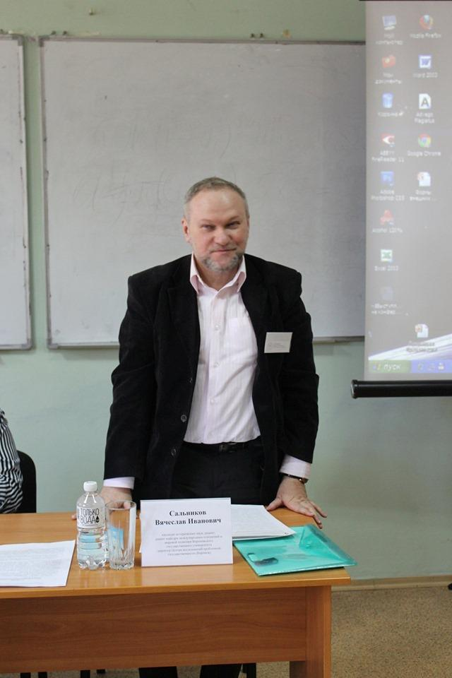
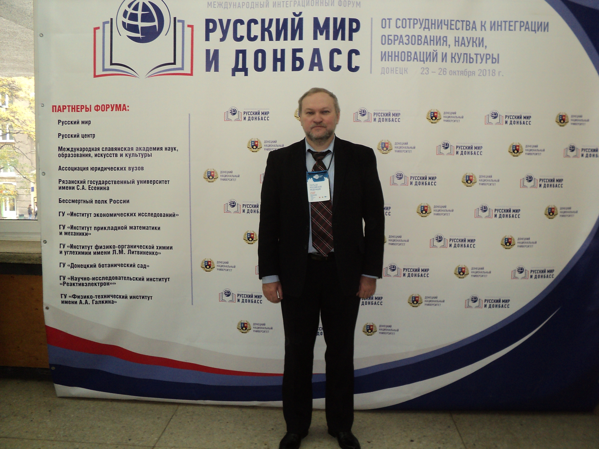
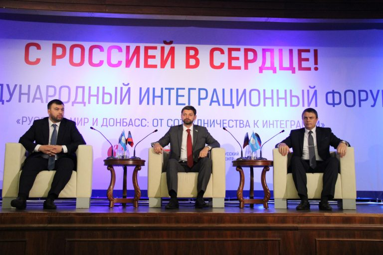
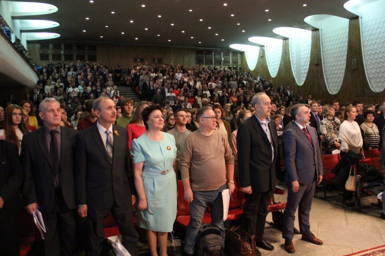
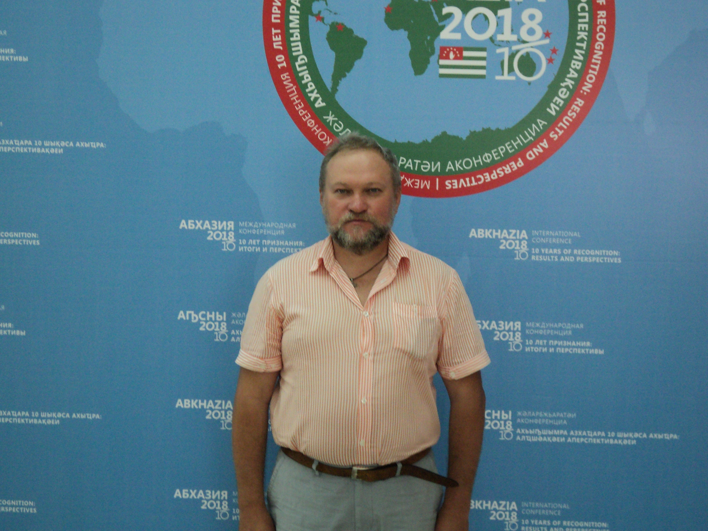
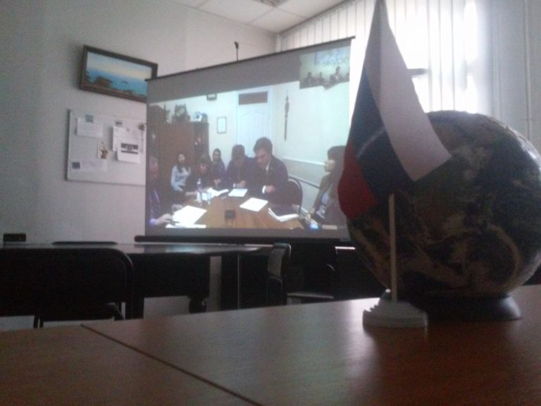
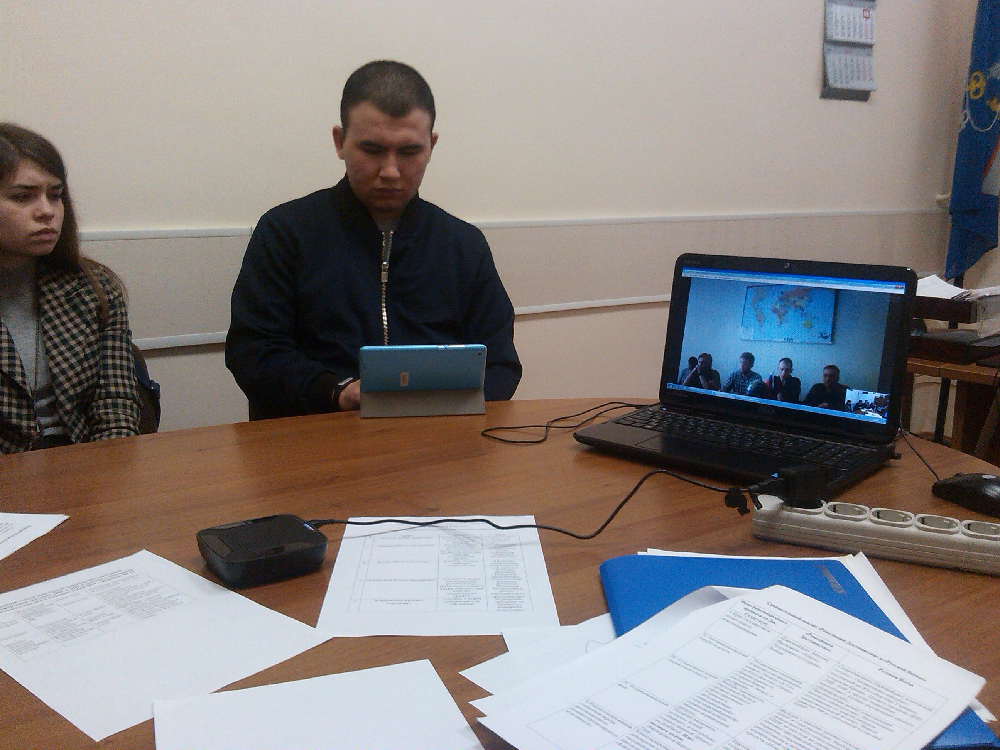
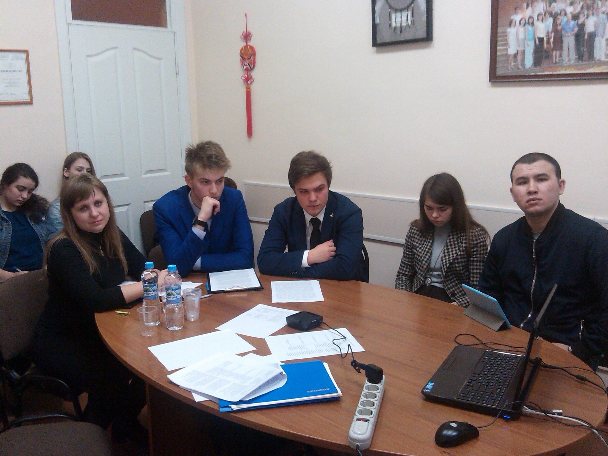

|
В конце апреля – начале мая в Донецке прошли две международные научные конференции. 25-26 апреля 2019 г. проходила конференция «История Донбасса: анализ и перспективы», а 6-7 мая – «Политический процесс в Донецкой Народной Республике: институциональное и ценностное измерение». В них принял участие директор Центра исследований проблемной государственности, к.и.н., доцент кафедры международных отношений и мировой политики Сальников В.И.
Обе конференции прошли на высоком научном и организационном уровне с привлечением ведущих ученых из государств Русского мира, управленцев высшего звена и политиков ДНР. По их итогам были приняты резолюции, где в частности отмечалось не только важность и своевременность проделанной политологами работы по осмыслению пройденного ДНР пути, но и необходимость продолжения прямых научных контактов исследователей РФ, ДНР, ЛНР, ПМР и других государств де-факто, сотрудничества с властными структурами республики, придания политологии статуса нормативной дисциплины, создания ассоциации исследователей государств де-факто при особой роли Центра проблемной государственности, объединения усилий по работе над учебным пособием по политологии с учетом российских цивилизационных особенностей и специфики транзита сецессионистских государств. Участники отмечали важность для всего Русского мира того шага, что предпринял президент России В.В. Путин, подписав указ об упрощенном получении российского гражданства жителей ЛДНР, которые теперь не только наши соотечественники, но и потенциальные сограждане.
Кроме участия в конференциях В.И. Сальников работал в научной библиотеке им Н.К. Крупской, прочитал лекцию в Донецком высшем общевойсковом командном училище, выступил на местном телевидении и перед студентами-политологами из ДонНУ, встретился с рядом донецких политиков.

С 23 по 26 октября в Донецке прошел Международный интеграционный форум «Русский мир и Донбасс: от сотрудничества к интеграции образования, науки, инноваций и культуры». Мероприятие было организовано фондом «Русский мир», Донецким Национальным Университетом, Русским Центром ДНР, и прошло на высоком уровне.
На открытие форума приехали ио Глав ДНР и ЛНР — Денис Пушилин и Леонид Пасечник, а также депутат Государственной Думы РФ, координатор интеграционного комитета «Россия-Донбасс» Андрей Козенко.
После торжественного открытия форума прошли три подиумные дискуссии: «Пути интеграции Донбасса в научное и образовательное пространство России», «Перспективы инновационного социально-экономического развития Донбасса на пути интеграции с Россией», «Сохранить и приумножить культурно-историческое наследие Русского мира в Донбассе», а также круглый стол «История Донбасса в зеркале современных проблем».
24 октября состоялись Международная научно-практическая конференция «Русский мир: проблемы духовно-нравственного, гражданско-патриотического воспитания и пути их решения», презентация Международной гуманитарной конференции «Дипломатия наследия», круглый стол «Перспективы развития полиэтнического Донбасса», телемост студенческих активов ДонНУ и вузов России под названием «Роль студенческого самоуправления в формировании будущего патриота», заседание регионального отделения Международной славянской академии наук, образования, искусств и культуры. Также были торжественно открыты Мультимедиацентр ДонНУ и научно-просветительский центр им. С.А. Есенина ДонНУ. Завершился второй день форума концертом заслуженного государственного академического ансамбля песни и танца «Донбасс» в актовом зале главного корпуса университета.
25 октября прошла ІІІ Международная научная конференция «Донецкие чтения 2018: образование, наука, инновации и культура и вызовы современности» с пленарным заседанием, круглыми столами и 13 секциями по факультетам. Также на филологическом факультете состоялись презентация журнала «Современное есениноведение» с новым разделом «Филологическая мысль Донбасс» и презентация музыкально-песенного альбома «Россия своих не бросает» Ольги Вороновой и Александра Трушина. Вечером прошел концерт художественной самодеятельности студентов ДонНУ.
26 октября в Донецком национальном университете подвели итоги Международного интеграционного форума. Заседание провела ректор ДонНУ Светлана Беспалова. В нем приняли участие руководители секций, проректоры, деканы и заместители деканов ДонНУ, а также гости из России.
Светлана Владимировна поблагодарила своих коллег за проделанную работу по организации форума и оценила его результаты:
— Уверена, что работа форума способствовала укреплению и развитию образовательных, научных, деловых контактов ученых и специалистов культурной сферы ДНР и других стран.
От Воронежа в Форуме принял участие директор Центра исследований проблемной государственности, к.и.н., доцент кафедры МОиМП ФМО ВГУ В.И. Сальников, выступивший там с несколькими докладами: 1) по цивилизационным аспектам Русского Мира; 2) по социально-философским и политико-антропологическим аспектам притягательности «мятежевойны» и 3) по проблемам непризнанных государств и внешней политике России в условиях мировой турбулентности.
С материалами Форума можно ознакомиться на сайте ДонНУ по следующей ссылке:
Материалы Форума



Директор Центра исследований проблемной государственности, доцент кафедры международных отношений и мировой политики Сальников В.И. принял участие в международной конференции «10 лет признания: итоги и перспективы», которая проходила в Сухуме (Абхазия) 22-23.08.2018 г. Конференция была организована абхазским МИДом при поддержке других органов государственной власти Абхазии. В рамках данного форума, собравшего сотни ученых и практиков не только из Абхазии и стран ее признавших (России, Южной Осетии, Нагорно-Карабахской Республики, ПМР, Венесуэллы…), но и из тех европейских и ближневосточных стран, где действуют абхазские консульские учреждения и диппредставительства (Великобритания, Германия, Италия, Израиль, Иордания и др.), было проведено 6 круглых столов:
1) Роль Первого Президента Республики Абхазия в становлении государственности;
2) Абхазия в контексте современных угроз и вызовов;
3) Аспекты культурного и гуманитарного взаимодействия Абхазии с современным миром;
4) Диаспоральный ресурс Республики Абхазия;
5) Межпарламентское сотрудничество и парламентская дипломатия;
6) Экономические, политические и социальные аспекты взаимодействия России и Абхазии.
В ее итоговой резолюции участники заявили о том, что «в условиях нарастания признаков долгосрочной конфронтации в международных отношениях необходимо активно развивать многовекторные связи Республики Абхазия с международными партнерами, содействовать укреплению регионального и международного сотрудничества, решению вопросов обеспечения всеобщего мира, стабильности и безопасности, продолжению конструктивного диалога между всеми народами и государствами».
Хочется отметить прекрасную организацию конференции, что позволило установить важные контакты с представителями непризнанных государств, с экспертным сообществом и много узнать об особенностях международной политики Абхазии и подобных ей стран.

Информация о Международной научной конференции студентов и молодых ученых
Донецкий национальный университет проводит Международную научную конференцию студентов и молодых ученых «Донецкие чтения 2017: Русский мир как цивилизационная основа научно-образовательного и культурного развития Донбасса» (посвященная 80-летию Донецкого национального университета) 17-19 октября 2017 года по адресу: г. Донецк, пр. Гурова, 14. Конференция проводится при финансовой поддержке Фонда «Русский Мир» (грант № 2016/II-211).
Основная цель конференции – развитие творческой активности студентов, аспирантов и молодых ученых, привлечение их к решению актуальных задач современной науки, установление деловых, образовательных и научных контактов для взаимовыгодного сотрудничества в рамках Русского мира.
Для желающих принять участие в работе конференции см. прикрепленный файл.
Донецкие чтения - 2017. Первое информационное письмо
4 апреля на факультете международных отношений в рамках международного заочного научного семинара «Проблемы стран СНГ и Центрально-Восточной Европы» прошла видеоконференция с Донецким национальным университетом (ДНР) на тему «Будущее ДНР и ЛНР в контексте обострения политического кризиса в Украине», организованная Центром исследований проблемной государственности.
В данной видеоконференции от ВГУ с докладами выступили: директор ЦИПГ, доцент В.И. Сальников ««Революция Достоинства» и «Русская Весна»: 2017 год», доцент Е.А. Слинько «Перспективы государственного строительства в ДНР и ЛНР в историческом контексте украинской государственности», студенты 2 курса ФМО Данил Горох «Гуманитарная программа по воссоединению народа Донбасса» и Даниил Мотрук «Паспортная политика Российской Федерации в самопровозглашенных государствах Восточной Европы».
Кроме докладчиков в видеоконференции приняли участие студенты, интересующиеся проблемами непризнанных государств и стран постсоветского пространства. Слушая доклады донецкой стороны, представленной главным редактором журнала «Новая Земля» А.Б. Ольхиным и студентами истфака ДонНУ, посвященные проблемам украинской государственности и ЛДНР, наши студенты (особенно Алина Джан, Кирилл Каблуков и Наталья Троценко) активно задавали вопросы по этим животрепещущим темам.
Участники видеоконференции по обе стороны видеомоста, признали необходимость такого диалога, дающего возможность прямого общения, преодолевая границы и информационный туман. Несмотря на разногласия по ряду позиций, мы все же являемся частью Русского Мира, от восстановления единства которого зависит наше общее Возрождение.



|